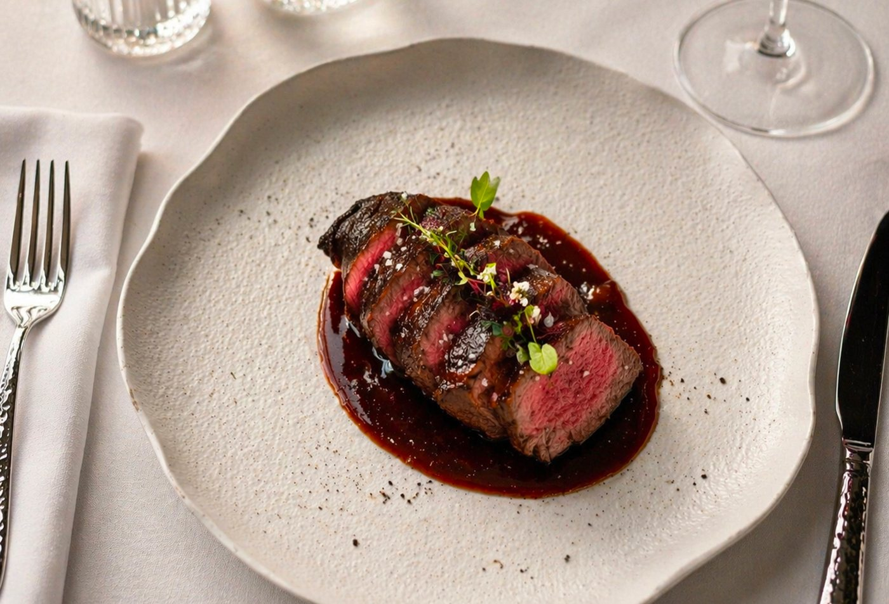

Latine
Find us
10–11 Lancashire Court
Mayfair, London W1S 1EY
Hours
Mon – Sat, 12pm – midnight
020 3887 3126

Menus
Rooted in French technique, inspired by Latin America. Crudo and seafood, plates from the grill, a cocktail list built around Latin spirits and a cellar of great houses and new discoveries.
Lunch & dinner
Crudo from the bar, plates for sharing and mains from the grill. Dishes change with the seasons.

Champagne & oysters
Twelve oysters from the crudo bar and a bottle of Champagne to share, for £60. Three afternoons a week.
Sea bream sashimi, coconut leche de tigre, roasted avocado, mint
Sea bass ceviche, passion fruit leche de tigre, popcorn
Cauliflower ceviche, 24-month Parmesan leche de tigre, tapioca biscuit
Hamachi sashimi, pineapple aguachile, sweetcorn blinis
Red prawn ceviche, mango & yuzu leche de tigre, plantain chips
Hand-cut steak tartare, truffle mayonnaise & crisp potato pavé
Tuna sashimi, lime & yuzu dressing, coconut cream, jalapeño oil
Tuna tartare, truffle dressing, ripe mango, datterino tomatoes, cashew nuts

Half dozen
Dozen
Baked snails, chimichurri butter
Bœuf Bourguignon stew, pickled pineapple, sweet potato purée
Duck croquettes, guava chipotle chutney
Corn cake, burrata
Cornish mussels, Latine marinière, fries
Brazilian cheese bread, Camembert filling
Creamy burrata, mango vinaigrette, cashew
Duck salad, goat’s cheese, raspberry vinaigrette, almonds
Grilled hispi cabbage, Peruvian curry sauce, Comté cheese
Pan-fried duck magret, confit potimarron, guava sauce
Grilled squid, ají panca chilli, sweetcorn purée
Chargrilled ribeye, chimichurri Béarnaise
Marinated lamb cutlets, plantain ravioli, Andean jus
Chargrilled beef fillet, Périgord sauce, dark chocolate
Grilled octopus, Puy lentils, olive sauce
Wild sea bass, ají amarillo beurre blanc
Roast chicken, wild mushroom, sauce verte
Layered Provençal vegetables, tomato fondue & herbs
Grilled broccoli, herb butter
Creamy mashed potatoes
Green salad, tomatoes, onions
French fries
Add Comté Cheese — £3
Add Truffle — £7
(V) Vegetarian · (VG) Vegan. Please always inform your server of any allergies or intolerances before ordering. Not all ingredients are listed and we cannot guarantee the total absence of allergens; information on the fourteen legal allergens is available on request. All prices include VAT. A discretionary 13.5% service charge will be added to your bill.
The bar
Signatures built around tequila, mezcal, pisco and cachaça, French aperitifs and serious non-alcoholic serves.
Cherry-infused Ketel One, Branca Menta, Amaro Mondino, pineapple
Hennessy VS, Casamigos Mezcal, Mozart Dark, Antica Formula, Bénédictine, bitters
Don Julio Blanco, yuzu, chilli
Casamigos Tequila, lychee, apple, egg white
Velho Barreiro Cachaça, passion fruit, pineapple, coriander
Bounty White Rum, Plantation Punch, carob, tonka
Bulleit Bourbon, tamarind, Angostura
Rice-infused Ketel One, Green Chartreuse, Dolin Dry, pea & mint shrub
Don Julio Reposado, Bénédictine D.O.M., Cointreau, red pepper
Zacapa No. 23, falernum, banana, Licor 43, chocolate
Johnnie Walker Black Ruby, Aperol, Antica Formula, yuzu
The Singleton of Dufftown 12yo, Casamigos Mezcal, grapefruit, agave
Palmarae Gin, Lillet Blanc, passion fruit, guava
Classic cocktails are available upon request.
Hibiscus, Pisco, rose, Rosé Champagne
Coconut compote, Crémant de Bourgogne
Aperol, passion fruit, Crémant de Bourgogne
Seedlip Grove 42, rose syrup, lychee, soda
Apple, guava, hibiscus, Fever-Tree Elderflower
Seedlip Garden 108, cucumber, basil, Fever-Tree Soda Water
Almave Reposado, Monin Triple Sec, chilli, Fever-Tree Ginger Beer, red pepper
The cellar
Burgundy and Bordeaux beside Mendoza, Patagonia and the Uco Valley. Coravin pours of fine wines by the glass.
All our wines are available by the 125ml glass.
Back bar
Spirits served at 50ml (25ml on request).